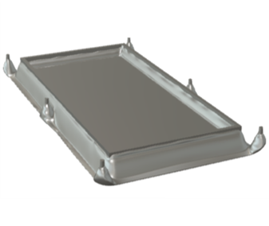

Engineering Scenarios
A series of week-long group projects where engineering tasks are presented with minimal pretext and no additional guidance. Akin to being thrust into the "deep end" of engineering: with final products, write-ups and presentations due at the end of the week.Jet Engine Bracket [Scenario Week 4] - UCL Mechanical Engineering
Overview
- Redesigning a 1.8kg titanium alloy Jet Engine Bracket within Fusion 360 to reduce its mass and production cost, and fashioning the toolpath for its manufacture using 3-axis CNC machining.
- The redesigned bracket would then be subjected to four simulated loads: 8000lbs vertical, 8500lbs horizontal, 9500lbs at 42° from vertical and 5000lb-in torsional at clevis centerline. (see right →)
- Objectives included optimising the bracket's minimum safety factor exhibited under load conditions, along with keeping machining times and stock material mass low: leading to feasible overall production cost.
My contributions
- The redesign was constrained by the 6 hole locations in the original bracket (see below). The preserve geometery was constructed in Fusion 360 in order to utilise generative design.
- Over 20 design iterations for the bracket were constructed using generative design. All iterations were tested under the load conditions to gauge performance of the current design and to help understand how to optimise further designs.
- Earlier iterations showed reduction of the raised sections of the bracket through increased slope angles. Yet these still weighed near 2kg with load testing showing excessive minimum safety factors of 10+: evidencing the further design optimisation required.
- Later iterations began to form openings in the base of the bracket, along with more angled and curved slopes. These weighed less than 1kg with minimum safety factors close to 2. However, these designs were very complex: requiring 6+ hours to manufacture.
- Tools used in the manufacture were the flat end, bullnose and ball end mills of varying sizes. Main operations for clearing material were adaptive clearing and 2D pocket strategies, along with radial being used to cut the holes in the curved surface of the bracket.
Results
- The final bracket has a mass of 0.995kg, a 45% reduction from 1.814kg.
- The openings in the base suggested by the generative design are incorporated, whilst minimising the excessive curvature and sloping that heavily increases manufacturing time. Edges were filleted and the surface was finished with the parallel strategy for user installation safety.
- The design passes all four load cases comfortably with a lowest minimum safety factor of 1.8 under the vertical load.
- The machining time comes to 1:39:31 for 13 operations, using 5.59kg stock mass of titanium. The final unit cost is low at £151.71.
- The final presentation was very well received by the panel, and the project received a first class.
- Redesigning a swappable vehicle battery tray within Fusion 360, that supports an electric battery and is secured to the vehicle undercarriage. (original tray on right →)
- Tray design objectives and performance metrics were to be formulated and justified, and then shown to be met through appropriate simulations.
- The design was constrained by the battery weight of 350kg and dimensions of 1 x 2 x 0.1m, in addition to the four location pins of length 0.1m on the tray used for alignment
- Formulated objectives for the tray included:
- Reducing tray dimensions to make the tray more commercially viable and compatible with more vehicles.
- Keeping maximum vertical deflection experienced by the tray to under 1% of its length
- Minimising number of bolt holes to ensure fast battery swap time and reduce maintenance
- Keeping tray design easy to manufacture for its mass production - Firstly vector calculations were utilised to evaluate the moment forces acting on the tray under varying bolt hole configurations, in order to minimise the number of holes incorporated.
- Then, Euler-Bernoulli beam bending theory (assuming the battery as a distributed load) estimated the maximum deflections that the tray would experience at the centre. The original tray hole placement (left) is seen next to the reconfigured below (right).
- In selecting the tray material, datasheets stated the stable operating temperature range for EV batteries from -20°C to +40°C. Additionally, the material had to be resistant to corrosion and environmental conditions such as salt, rain, dirt, rocks, etc.
- Hence, material choices were narrowed using CES Edupack to alloys and metals only, excluding fibres. Further indices concerning yield strength, modulus, density and price were applied, and a final decision matrix was employed to finalise on Magnesium Alloy.
- Load cases were surmised and implemented for testing of the tray design, where it must safely and reliably carry the battery:
- amidst high g-forces due to acceleration/turning [up to 1.25g as in high-end sports cars]
- at inclination angles of up to ±40°
- amidst impulsive forces due to speed bumps and road imperfections - Preserve geometry for the new tray design was constructed within Fusion 360, in order to implement generative design.
- Design iterations showed removal of material around the bolt holes, sloping towards the tray lip and thinning of the tray base. However, these optimisations would have to be refined for mass production.
- The final design exhibited a 25% mass reduction from the original: incorporating cutouts around the bolt holes as suggested by generative design, along with tray base and lip thinning, yet compromising the sloping profiles to decrease manufacturing complexity.
- Stress tests under the load cases showed a maximum stress experienced by the tray of 3.18MPa during a simulated speed bump event [where atmospheric pressure is 101.33MPa]
- Tray performed exceedingly regarding deflection in the load cases, where the maximum experienced vertical deflection was only 0.22mm under 1.25g acceleration at a 40° incline.
- The presentation received a first class, being well received by the panel: noting the ease of manufacture and low deflection figures.


Electric Vehicle Battery Tray [Scenario Week 3] - UCL Mechanical Engineering
Overview
My contributions

